Bioinformatics is the science of transforming and processing biological data to gain new insights, particularly omics data: genomics, proteomics, metabolomics, etc.. Bioinformatics is mostly a mix of biology, computer science, and statistics / data science.
A k-mer is a subsequence of length k within some larger biological sequence (e.g. DNA or amino acid chain). For example, in the DNA sequence GAAATC, the following k-mer's exist:
| k | k-mers |
|---|---|
| 1 | G A A A T C |
| 2 | GA AA AA AT TC |
| 3 | GAA AAA AAT ATC |
| 4 | GAAA AAAT AATC |
| 5 | GAAAT AAATC |
| 6 | GAAATC |
Often times we'll need to either...
WHAT: Given a DNA k-mer, calculate its reverse complement.
WHY: Depending on the type of biological sequence, a k-mer may have one or more alternatives. For DNA sequences specifically, a k-mer of interest may have an alternate form. Since the DNA molecule comes as 2 strands, where ...
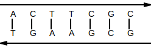
, ... the reverse complement of that k-mer may be just as valid as the original k-mer. For example, if an enzyme is known to bind to a specific DNA k-mer, it's possible that it might also bind to the reverse complement of that k-mer.
ALGORITHM:
def reverse_complement(strand: str):
ret = ''
for i in range(0, len(strand)):
base = strand[i]
if base == 'A' or base == 'a':
base = 'T'
elif base == 'T' or base == 't':
base = 'A'
elif base == 'C' or base == 'c':
base = 'G'
elif base == 'G' or base == 'g':
base = 'C'
else:
raise Exception('Unexpected base: ' + base)
ret += base
return ret[::-1]Original: TAATCCG
Reverse Complement: CGGATTA
WHAT: Given 2 k-mers, the hamming distance is the number of positional mismatches between them.
WHY: Imagine an enzyme that looks for a specific DNA k-mer pattern to bind to. Since DNA is known to mutate, it may be that that enzyme can also bind to other k-mer patterns that are slight variations of the original. For example, that enzyme may be able to bind to both AAACTG and AAAGTG.
ALGORITHM:
def hamming_distance(kmer1: str, kmer2: str) -> int:
mismatch = 0
for ch1, ch2 in zip(kmer1, kmer2):
if ch1 != ch2:
mismatch += 1
return mismatchKmer1: ACTTTGTT
Kmer2: AGTTTCTT
Hamming Distance: 2
↩PREREQUISITES↩
WHAT: Given a source k-mer and a minimum hamming distance, find all k-mers such within the hamming distance of the source k-mer. In other words, find all k-mers such that hamming_distance(source_kmer, kmer) <= min_distance.
WHY: Imagine an enzyme that looks for a specific DNA k-mer pattern to bind to. Since DNA is known to mutate, it may be that that enzyme can also bind to other k-mer patterns that are slight variations of the original. This algorithm finds all such variations.
ALGORITHM:
def find_all_dna_kmers_within_hamming_distance(kmer: str, hamming_dist: int) -> set[str]:
def recurse(kmer: str, hamming_dist: int, output: set[str]) -> None:
if hamming_dist == 0:
output.add(kmer)
return
for i in range(0, len(kmer)):
for ch in 'ACTG':
neighbouring_kmer = kmer[:i] + ch + kmer[i + 1:]
recurse(neighbouring_kmer, hamming_dist - 1, output)
output = set()
recurse(kmer, hamming_dist, output)
return outputKmers within hamming distance 1 of AAAA: {'ACAA', 'ATAA', 'AGAA', 'AAGA', 'AAAC', 'AAAT', 'AATA', 'AACA', 'CAAA', 'AAAG', 'GAAA', 'TAAA', 'AAAA'}
↩PREREQUISITES↩
WHAT: Given a k-mer, find where that k-mer occurs in some larger sequence. The search may potentially include the k-mer's variants (e.g. reverse complement).
WHY: Imagine that you know of a specific k-mer pattern that serves some function in an organism. If you see that same k-mer pattern appearing in some other related organism, it could be a sign that that k-mer pattern serves a similar function. For example, the same k-mer pattern could be used by 2 related types of bacteria as a DnaA box.
The enzyme that operates on that k-mer may also operate on its reverse complement as well as slight variations on that k-mer. For example, if an enzyme binds to AAAAAAAAA, it may also bind to its...
ALGORITHM:
class Options(NamedTuple):
hamming_distance: int = 0
reverse_complement: bool = False
def find_kmer_locations(sequence: str, kmer: str, options: Options = Options()) -> List[int]:
# Construct test kmers
test_kmers = set()
test_kmers.add(kmer)
[test_kmers.add(alt_kmer) for alt_kmer in find_all_dna_kmers_within_hamming_distance(kmer, options.hamming_distance)]
if options.reverse_complement:
rc_kmer = reverse_complement(kmer)
[test_kmers.add(alt_rc_kmer) for alt_rc_kmer in find_all_dna_kmers_within_hamming_distance(rc_kmer, options.hamming_distance)]
# Slide over the sequence's kmers and check for matches against test kmers
k = len(kmer)
idxes = []
for seq_kmer, i in slide_window(sequence, k):
if seq_kmer in test_kmers:
idxes.append(i)
return idxesFound AAAA in AAAAGAACCTAATCTTAAAGGAGATGATGATTCTAA at index [0, 1, 2, 3, 12, 15, 16, 30]
↩PREREQUISITES↩
WHAT: Given a k-mer, find where that k-mer clusters in some larger sequence. The search may potentially include the k-mer's variants (e.g. reverse complement).
WHY: An enzyme may need to bind to a specific region of DNA to begin doing its job. That is, it looks for a specific k-mer pattern to bind to, where that k-mer represents the beginning of some larger DNA region that it operates on. Since DNA is known to mutate, often times you'll find multiple copies of the same k-mer pattern clustered together -- if one copy mutated to become unusable, the other copies are still around.
For example, the DnaA box is a special k-mer pattern used by enzymes during DNA replication. Since DNA is known to mutate, the DnaA box can be found repeating multiple times in the region of DNA known as the replication origin. Finding the DnaA box clustered in a small region is a good indicator that you've found the replication origin.
ALGORITHM:
def find_kmer_clusters(sequence: str, kmer: str, min_occurrence_in_cluster: int, cluster_window_size: int, options: Options = Options()) -> List[int]:
cluster_locs = []
locs = find_kmer_locations(sequence, kmer, options)
start_i = 0
occurrence_count = 1
for end_i in range(1, len(locs)):
if locs[end_i] - locs[start_i] < cluster_window_size: # within a cluster window?
occurrence_count += 1
else:
if occurrence_count >= min_occurrence_in_cluster: # did the last cluster meet the min ocurr requirement?
cluster_locs.append(locs[start_i])
start_i = end_i
occurrence_count = 1
return cluster_locsFound clusters of GGG (at least 3 occurrences in window of 13) in GGGACTGAACAAACAAATTTGGGAGGGCACGGGTTAAAGGAGATGATGATTCAAAGGGT at index [19, 37]
↩PREREQUISITES↩
WHAT: Given a sequence, find clusters of unique k-mers within that sequence. In other words, for each unique k-mer that exists in the sequence, see if it clusters in the sequence. The search may potentially include variants of k-mer variants (e.g. reverse complements of the k-mers).
WHY: An enzyme may need to bind to a specific region of DNA to begin doing its job. That is, it looks for a specific k-mer pattern to bind to, where that k-mer represents the beginning of some larger DNA region that it operates on. Since DNA is known to mutate, often times you'll find multiple copies of the same k-mer pattern clustered together -- if one copy mutated to become unusable, the other copies are still around.
For example, the DnaA box is a special k-mer pattern used by enzymes during DNA replication. Since DNA is known to mutate, the DnaA box can be found repeating multiple times in the region of DNA known as the replication origin. Given that you don't know the k-mer pattern for the DnaA box but you do know the replication origin, you can scan through the replication origin for repeating k-mer patterns. If a pattern is found to heavily repeat, it's a good candidate that it's the k-mer pattern for the DnaA box.
ALGORITHM:
from Utils import slide_window
def count_kmers(data: str, k: int, options: Options = Options()) -> Counter[str]:
counter = Counter()
for kmer, i in slide_window(data, k):
neighbourhood = find_all_dna_kmers_within_hamming_distance(kmer, options.hamming_distance)
for neighbouring_kmer in neighbourhood:
counter[neighbouring_kmer] += 1
if options.reverse_complement:
kmer_rc = reverse_complement(kmer)
neighbourhood = find_all_dna_kmers_within_hamming_distance(kmer_rc, options.hamming_distance)
for neighbouring_kmer in neighbourhood:
counter[neighbouring_kmer] += 1
return counter
def top_repeating_kmers(data: str, k: int, options: Options = Options()) -> Set[str]:
counts = count_kmers(data, k, options)
_, top_count = counts.most_common(1)[0]
top_kmers = set()
for kmer, count in counts.items():
if count == top_count:
top_kmers.add((kmer, count))
return top_kmersTop 5-mer frequencies for GGGACTGAACAAACAAATTTGGGAGGGCACGGGTTAAAGGAGATGATGATTCAAAGGGT:
↩PREREQUISITES↩
WHAT: Given a sequence, find regions within that sequence that contain clusters of unique k-mers. In other words, ...
The search may potentially include variants of k-mer variants (e.g. reverse complements of the k-mers).
WHY: An enzyme may need to bind to a specific region of DNA to begin doing its job. That is, it looks for a specific k-mer pattern to bind to, where that k-mer represents the beginning of some larger DNA region that it operates on. Since DNA is known to mutate, often times you'll find multiple copies of the same k-mer pattern clustered together -- if one copy mutated to become unusable, the other copies are still around.
For example, the DnaA box is a special k-mer pattern used by enzymes during DNA replication. Since DNA is known to mutate, the DnaA box can be found repeating multiple times in the region of DNA known as the replication origin. Given that you don't know the k-mer pattern for the DnaA box but you do know the replication origin, you can scan through the replication origin for repeating k-mer patterns. If a pattern is found to heavily repeat, it's a good candidate that it's the k-mer pattern for the DnaA box.
ALGORITHM:
def scan_for_repeating_kmers_in_clusters(sequence: str, k: int, min_occurrence_in_cluster: int, cluster_window_size: int, options: Options = Options()) -> Set[KmerCluster]:
def neighborhood(kmer: str) -> Set[str]:
neighbourhood = find_all_dna_kmers_within_hamming_distance(kmer, options.hamming_distance)
if options.reverse_complement:
kmer_rc = reverse_complement(kmer)
neighbourhood = find_all_dna_kmers_within_hamming_distance(kmer_rc, options.hamming_distance)
return neighbourhood
kmer_counter = {}
def add_kmer(kmer: str, loc: int) -> None:
if kmer not in kmer_counter:
kmer_counter[kmer] = set()
kmer_counter[kmer].add(window_idx + kmer_idx)
def remove_kmer(kmer: str, loc: int) -> None:
kmer_counter[kmer].remove(window_idx - 1)
if len(kmer_counter[kmer]) == 0:
del kmer_counter[kmer]
clustered_kmers = set()
old_first_kmer = None
for window, window_idx in slide_window(sequence, cluster_window_size):
first_kmer = window[0:k]
last_kmer = window[-k:]
# If first iteration, add all kmers
if window_idx == 0:
for kmer, kmer_idx in slide_window(window, k):
for alt_kmer in neighborhood(kmer):
add_kmer(alt_kmer, window_idx + kmer_idx)
else:
# Add kmer that was walked in to
for new_last_kmer in neighborhood(last_kmer):
add_kmer(new_last_kmer, window_idx + cluster_window_size - k)
# Remove kmer that was walked out of
if old_first_kmer is not None:
for alt_kmer in neighborhood(old_first_kmer):
remove_kmer(alt_kmer, window_idx - 1)
old_first_kmer = first_kmer
# Find clusters within window -- tuple is k-mer, start_idx, occurrence_count
[clustered_kmers.add(KmerCluster(k, min(v), len(v))) for k, v in kmer_counter.items() if len(v) >= min_occurrence_in_cluster]
return clustered_kmersFound clusters of k=9 (at least 6 occurrences in window of 20) in TTTTTTTTTTTTTCCCTTTTTTTTTCCCTTTTTTTTTTTTT at...
↩PREREQUISITES↩
WHAT: Given ...
... find the probability of that k-mer appearing at least c times within an arbitrary sequence of length n. For example, the probability that the 2-mer AA appears at least 2 times in a sequence of length 4:
The probability is 7/256.
This isn't trivial to accurately compute because the occurrences of a k-mer within a sequence may overlap. For example, the number of times AA appears in AAAA is 3 while in CAAA it's 2.
WHY: When a k-mer is found within a sequence, knowing the probability of that k-mer being found within an arbitrary sequence of the same length hints at the significance of the find. For example, if some 10-mer has a 0.2 chance of appearing in an arbitrary sequence of length 50, that's too high of a chance to consider it a significant find -- 0.2 means 1 in 5 chance that the 10-mer just randomly happens to appear.
ALGORITHM:
This algorithm tries every possible combination of sequence to find the probability. It falls over once the length of the sequence extends into the double digits. It's intended to help conceptualize what's going on.
# Of the X sequence combinations tried, Y had the k-mer. The probability is Y/X.
def bruteforce_probability(searchspace_len: int, searchspace_symbol_count: int, search_for: List[int], min_occurrence: int) -> (int, int):
found = 0
found_max = searchspace_symbol_count ** searchspace_len
str_to_search = [0] * searchspace_len
def count_instances():
ret = 0
for i in range(0, searchspace_len - len(search_for) + 1):
if str_to_search[i:i + len(search_for)] == search_for:
ret += 1
return ret
def walk(idx: int):
nonlocal found
if idx == searchspace_len:
count = count_instances()
if count >= min_occurrence:
found += 1
else:
for i in range(0, searchspace_symbol_count):
walk(idx + 1)
str_to_search[idx] += 1
str_to_search[idx] = 0
walk(0)
return found, found_maxBrute-forcing probability of ACTG in arbitrary sequence of length 8
Probability: 0.0195159912109375 (1279/65536)
ALGORITHM:
⚠️NOTE️️️⚠️
The explanation in the comments below are a bastardization of "1.13 Detour: Probabilities of Patterns in a String" in the Pevzner book...
This algorithm tries estimating the probability by ignoring the fact that the occurrences of a k-mer in a sequence may overlap. For example, searching for the 2-mer AA in the sequence AAAT yields 2 instances of AA:
If we go ahead and ignore overlaps, we can think of the k-mers occurring in a string as insertions. For example, imagine a sequence of length 7 and the 2-mer AA. If we were to inject 2 instances of AA into the sequence to get it to reach length 7, how would that look?
2 instances of a 2-mer is 4 characters has a length of 5. To get the sequence to end up with a length of 7 after the insertions, the sequence needs to start with a length of 3:
SSS
Given that we're changing reality to say that the instances WON'T overlap in the sequence, we can treat each instance of the 2-mer AA as a single entity being inserted. The number of ways that these 2 instances can be inserted into the sequence is 10:
I = insertion of AA, S = arbitrary sequence character
IISSS ISISS ISSIS ISSSI
SIISS SISIS SISSI
SSIIS SSISI
SSSII
Another way to think of the above insertions is that they aren't insertions. Rather, we have 5 items in total and we're selecting 2 of them. How many ways can we select 2 of those 5 items? 10.
The number of ways to insert can be counted via the "binomial coefficient": bc(m, k) = m!/(k!(m-k)!), where m is the total number of items (5 in the example above) and k is the number of selections (2 in the example above). For the example above:
bc(5, 2) = 5!/(2!(5-2)!) = 10
Since the SSS can be any arbitrary nucleotide sequence of 3, we count the number of different representations that are possible for SSS: 4^3 = 4*4*4 = 64 (4^3, 4 because a nucleotide can be one of ACTG, 3 because the length is 3). In each of these representations, the 2-mer AA can be inserted in 10 different ways:
64*10 = 640
Since the total length of the sequence is 7, we count the number of different representations that are possible:
4^7 = 4*4*4*4*4*4*4 = 16384
The estimated probability is 640/16384. For non-overlapping k-mers the estimation will actually be "relatively accurate", while for overlapping k-mers not so much. Maybe try training a deep learning model to see if it can provide better estimates?
def estimate_probability(searchspace_len: int, searchspace_symbol_count: int, search_for: List[int], min_occurrence: int) -> float:
def factorial(num):
if num == 1:
return num
else:
return num * factorial(num - 1)
def bc(m, k):
return factorial(m) / (factorial(k) * factorial(m - k))
k = len(search_for)
n = (searchspace_len - min_occurrence * k)
return bc(n + min_occurrence, min_occurrence) * (searchspace_symbol_count ** n) / searchspace_symbol_count ** searchspace_lenEstimating probability of ACTG in arbitrary sequence of length 8
Probability: 0.01953125
WHAT: Given a sequence, walk over it and ...
WHY: Given the DNA sequence of an organism, some segments may have lower count of Gs vs Cs.
During replication, some segments of DNA stay single-stranded for a much longer time than other segments. Single-stranded DNA is 100 times more susceptible to mutations than double-stranded DNA. Specifically, in single-stranded DNA, C has a greater tendency to mutate to T. When that single-stranded DNA re-binds to a neighbouring strand, the positions of any nucleotides that mutated from C to T will change on the neighbouring strand from G to A.
⚠️NOTE️️️⚠️
Recall that the reverse complements of ...
It mutated from C to T. Since its now T, its complement is A.
Plotting the skew lets you know the rough location of segments that stayed single-stranded for a longer period of time. That information hints at special / useful locations in the organism's DNA sequence (replication origin / replication terminus).
ALGORITHM:
def gc_skew(seq: str):
counter = 0
skew = [counter]
for i in range(len(seq)):
if seq[i] == 'G':
counter += 1
skew.append(counter)
elif seq[i] == 'C':
counter -= 1
skew.append(counter)
else:
skew.append(counter)
return skewCalculating skew for: ...
Result: [0, -1, -1,...
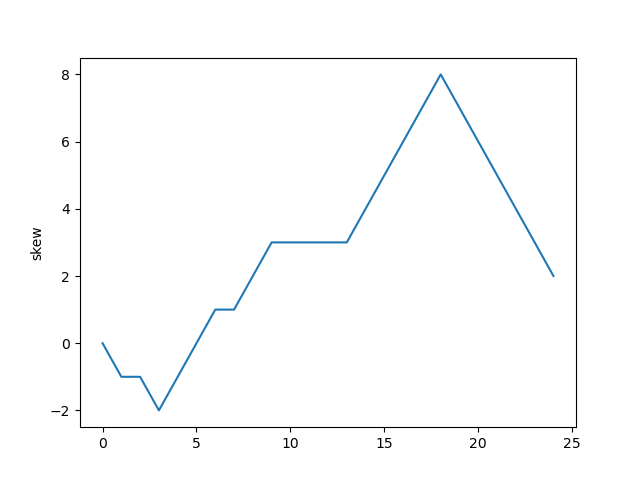
↩PREREQUISITES↩
A motif is a pattern that matches many different k-mers, where those matched k-mers have some shared biological significance. The pattern matches a fixed k where each position may have alternate forms. The simplest way to think of a motif is a regex pattern without quantifiers. For example, the regex [AT]TT[GC]C may match to ATTGC, ATTCC, TTTGC, and TTTCC.
Often times we'll have identified a set of biological sequences where each sequence, we suspect, contains a k-mer that matches some motif. We'll need to find the k-mers and the motif they match. For example, each of the following sequences contains a k-mer that matches some motif:
| Sequences |
|---|
| ATTGTTACCATAACCTTATTGCTAG |
| ATTCCTTTAGGACCACCCCAAACCC |
| CCCCAGGAGGGAACCTTTGCACACA |
| TATATATTTCCCACCCCAAGGGGGG |
The motif is the one described above ([AT]TT[GC]C):
| Sequences |
|---|
| ATTGTTACCATAACCTTATTGCTAG |
| ATTCCTTTAGGACCACCCCAAACCC |
| CCCCAGGAGGGAACCTTTGCACACA |
| TATATATTTCCCACCCCAAGGGGGG |
A motif matrix is a matrix of k-mers that are suspected to be part of a motif. In the example sequences above, the motif matrix would be:
| 0 | 1 | 2 | 3 | 4 |
|---|---|---|---|---|
| A | T | T | G | C |
| A | T | T | C | C |
| T | T | T | G | C |
| T | T | T | C | C |
WHAT: Given a motif matrix, generate a k-mer where each position is the nucleotide most abundant at that column of the matrix.
WHY: Given a set of k-mers that are suspected to be part of a motif (motif matrix), the k-mer generated by selecting the most abundant column at each index is the "ideal" k-mer for the motif. It's a concise way of describing the motif, especially if the columns in the motif matrix are highly conserved.
ALGORITHM:
def get_consensus_string(kmers: List[str]) -> str:
count = len(kmers[0]);
out = ''
for i in range(0, count):
c = Counter()
for kmer in kmers:
c[kmer[i]] += 1
ch = c.most_common(1)
out += ch[0][0]
return outConsensus is TTTCC in
ATTGC
ATTCC
TTTGC
TTTCC
TTTCA
WHAT: Given a motif matrix, count how many of each nucleotide are in each column.
WHY: Having a count of the number of nucleotides in each column is a basic statistic that gets used further down the line for tasks such as scoring a motif matrix.
ALGORITHM:
def motif_matrix_count(motif_matrix: List[str], elements='ACGT') -> Dict[str, List[int]]:
rows = len(motif_matrix)
cols = len(motif_matrix[0])
ret = {}
for ch in elements:
ret[ch] = [0] * cols
for c in range(0, cols):
for r in range(0, rows):
item = motif_matrix[r][c]
ret[item][c] += 1
return retCounting nucleotides at each column of the motif matrix...
ATTGC
TTTGC
TTTGG
ATTGC
Result...
('A', [2, 0, 0, 0, 0])
('C', [0, 0, 0, 0, 3])
('G', [0, 0, 0, 4, 1])
('T', [2, 4, 4, 0, 0])
↩PREREQUISITES↩
WHAT: Given a motif matrix, for each column calculate how often A, C, G, and T occur as percentages.
WHY: The percentages for each column represent a probability distribution for that column. For example, in column 1 of...
| 0 | 1 | 2 | 3 | 4 |
|---|---|---|---|---|
| A | T | T | C | G |
| C | T | T | C | G |
| T | T | T | C | G |
| T | T | T | T | G |
These probability distributions can be used further down the line for tasks such as determining the probability that some arbitrary k-mer conforms to the same motif matrix.
ALGORITHM:
def motif_matrix_profile(motif_matrix_counts: Dict[str, List[int]]) -> Dict[str, List[float]]:
ret = {}
for elem, counts in motif_matrix_counts.items():
ret[elem] = [0.0] * len(counts)
cols = len(counts) # all elems should have the same len, so just grab the last one that was walked over
for i in range(cols):
total = 0
for elem in motif_matrix_counts.keys():
total += motif_matrix_counts[elem][i]
for elem in motif_matrix_counts.keys():
ret[elem][i] = motif_matrix_counts[elem][i] / total
return retProfiling nucleotides at each column of the motif matrix...
ATTCG
CTTCG
TTTCG
TTTTG
Result...
('A', [0.25, 0.0, 0.0, 0.0, 0.0])
('C', [0.25, 0.0, 0.0, 0.75, 0.0])
('G', [0.0, 0.0, 0.0, 0.0, 1.0])
('T', [0.5, 1.0, 1.0, 0.25, 0.0])
WHAT: Given a motif matrix, assign it a score based on how similar the k-mers that make up the matrix are to each other. Specifically, how conserved the nucleotides at each column are.
WHY: Given a set of k-mers that are suspected to be part of a motif (motif matrix), the more similar those k-mers are to each other the more likely it is that those k-mers are members of the same motif. This seems to be the case for many enzymes that bind to DNA based on a motif (e.g. transcription factors).
ALGORITHM:
This algorithm scores a motif matrix by summing up the number of unpopular items in a column. For example, imagine a column has 7 Ts, 2 Cs, and 1A. The Ts are the most popular (7 items), meaning that the 3 items (2 Cs and 1 A) are unpopular -- the score for the column is 3.
Sum up each of the column scores to the get the final score for the motif matrix. A lower score is better.
def score_motif(motif_matrix: List[str]) -> int:
rows = len(motif_matrix)
cols = len(motif_matrix[0])
# count up each column
counter_per_col = []
for c in range(0, cols):
counter = Counter()
for r in range(0, rows):
counter[motif_matrix[r][c]] += 1
counter_per_col.append(counter)
# sum counts for each column AFTER removing the top-most count -- that is, consider the top-most count as the
# most popular char, so you're summing the counts of all the UNPOPULAR chars
unpopular_sums = []
for counter in counter_per_col:
most_popular_item = counter.most_common(1)[0][0]
del counter[most_popular_item]
unpopular_sum = sum(counter.values())
unpopular_sums.append(unpopular_sum)
return sum(unpopular_sums)Scoring...
ATTGC
TTTGC
TTTGG
ATTGC
3
↩PREREQUISITES↩
ALGORITHM:
This algorithm scores a motif matrix by calculating the entropy of each column in the motif matrix. Entropy is defined as the level of uncertainty for some variable. The more uncertain the nucleotides are in the column of a motif matrix, the higher (worse) the score. For example, given a motif matrix with 10 rows, a column with ...
Sum the output for each column to get the final score for the motif matrix. A lower score is better.
# According to the book, method of scoring a motif matrix as defined in ScoreMotif.py isn't the method used in the
# real-world. The method used in the real-world is this method, where...
# 1. each column has its probability distribution calculated (prob of A vs prob C vs prob of T vs prob of G)
# 2. the entropy of each of those prob dist are calculated
# 3. those entropies are summed up to get the ENTROPY OF THE MOTIF MATRIX
def calculate_entropy(values: List[float]) -> float:
ret = 0.0
for value in values:
ret += value * (log(value, 2.0) if value > 0.0 else 0.0)
ret = -ret
return ret
def score_motify_entropy(motif_matrix: List[str]) -> float:
rows = len(motif_matrix)
cols = len(motif_matrix[0])
# count up each column
counts = motif_matrix_count(motif_matrix)
profile = motif_matrix_profile(counts)
# prob dist to entropy
entropy_per_col = []
for c in range(cols):
entropy = calculate_entropy([profile['A'][c], profile['C'][c], profile['G'][c], profile['T'][c]])
entropy_per_col.append(entropy)
# sum up entropies to get entropy of motif
return sum(entropy_per_col)Scoring...
ATTGC
TTTGC
TTTGG
ATTGC
1.811278124459133
↩PREREQUISITES↩
WHAT: Given a motif matrix and a k-mer, calculate the probability of that k-mer being member of that motif.
WHY: Being able to determine if a k-mer is potentially a member of a motif can help speed up experiments. For example, imagine that you suspect 21 different genes of being regulated by the same transcription factor. You isolate the transcription factor binding site for 6 of those genes and use their sequences as the underlying k-mers for a motif matrix. That motif matrix doesn't represent the transcription factor's motif exactly, but it's close enough that you can use it to scan through the k-mers in the remaining 15 genes and calculate the probability of them being members of the same motif.
If a k-mer exists such that it conforms to the motif matrix with a high probability, it likely is a member of the motif.
ALGORITHM:
Imagine the following motif matrix:
| 0 | 1 | 2 | 3 | 4 | 5 |
|---|---|---|---|---|---|
| A | T | G | C | A | C |
| A | T | G | C | A | C |
| A | T | C | C | A | C |
| A | T | C | C | A | C |
Calculating the counts for that motif matrix results in:
| 0 | 1 | 2 | 3 | 4 | 5 | |
|---|---|---|---|---|---|---|
| A | 4 | 0 | 0 | 0 | 4 | 0 |
| C | 0 | 0 | 2 | 4 | 0 | 4 |
| T | 0 | 4 | 0 | 0 | 0 | 0 |
| G | 0 | 0 | 2 | 0 | 0 | 0 |
Calculating the profile from those counts results in:
| 0 | 1 | 2 | 3 | 4 | 5 | |
|---|---|---|---|---|---|---|
| A | 1 | 0 | 0 | 0 | 1 | 0 |
| C | 0 | 0 | 0.5 | 1 | 0 | 1 |
| T | 0 | 1 | 0 | 0 | 0 | 0 |
| G | 0 | 0 | 0.5 | 0 | 0 | 0 |
Using this profile, the probability that a k-mer conforms to the motif matrix is calculated by mapping the nucleotide at each position of the k-mer to the corresponding nucleotide in the corresponding position of the profile and multiplying them together. For example, the probability that the k-mer...
Of the these two k-mers, ...
Both of these k-mers should have a reasonable probability of being members of the motif. However, notice how the second k-mer ends up with a 0 probability. The reason has to do with the underlying concept behind motif matrices: the entire point of a motif matrix is to use the known members of a motif to find other potential members of that same motif. The second k-mer contains a T at index 0, but none of the known members of the motif have a T at that index. As such, its probability gets reduced to 0 even though the rest of the k-mer conforms.
Cromwell's rule says that when a probability is based off past events, a hard 0 or 1 values shouldn't be used. As such, a quick workaround to the 0% probability problem described above is to artificially inflate the the counts that lead to the profile such that no count is 0 (pseudocounts). For example, for the same motif matrix, incrementing the counts by 1 results in:
| 0 | 1 | 2 | 3 | 4 | 5 | |
|---|---|---|---|---|---|---|
| A | 5 | 1 | 1 | 1 | 5 | 1 |
| C | 1 | 1 | 3 | 5 | 1 | 5 |
| T | 1 | 5 | 1 | 1 | 1 | 1 |
| G | 1 | 1 | 3 | 1 | 1 | 1 |
Calculating the profile from those inflated counts results in:
| 0 | 1 | 2 | 3 | 4 | 5 | |
|---|---|---|---|---|---|---|
| A | 0.625 | 0.125 | 0.125 | 0.125 | 0.625 | 0.125 |
| C | 0.125 | 0.125 | 0.375 | 0.625 | 0.125 | 0.625 |
| T | 0.125 | 0.625 | 0.125 | 0.125 | 0.125 | 0.125 |
| G | 0.125 | 0.125 | 0.375 | 0.125 | 0.125 | 0.125 |
Using this new profile, the probability that the previous k-mers conform are:
Although the probabilities seem low, it's all relative. The probability calculated for the first k-mer (ATGCAC) is the highest probability possible -- each position in the k-mer maps to the highest probability nucleotide of the corresponding position of the profile.
# Run this on the counts before generating the profile to avoid the 0 probability problem.
def apply_psuedocounts_to_count_matrix(counts: Dict[str, List[int]], extra_count: int = 1):
for elem, elem_counts in counts.items():
for i in range(len(elem_counts)):
elem_counts[i] += extra_count
# Recall that a profile matrix is a matrix of probabilities. Each row represents a single element (e.g. nucleotide) and
# each column represents the probability distribution for that position.
#
# So for example, imagine the following probability distribution...
#
# 1 2 3 4
# A: 0.2 0.2 0.0 0.0
# C: 0.1 0.6 0.0 0.0
# G: 0.1 0.0 1.0 1.0
# T: 0.7 0.2 0.0 0.0
#
# At position 2, the probability that the element will be C is 0.6 while the probability that it'll be T is 0.2. Note
# how each column sums to 1.
def determine_probability_of_match_using_profile_matrix(profile: Dict[str, List[float]], kmer: str):
prob = 1.0
for idx, elem in enumerate(kmer):
prob = prob * profile[elem][idx]
return prob
def find_most_probable_kmer_using_profile_matrix(profile: Dict[str, List[float]], dna: str):
k = len(list(profile.values())[0])
most_probable: Tuple[str, float] = None # [kmer, probability]
for kmer, _ in slide_window(dna, k):
prob = determine_probability_of_match_using_profile_matrix(profile, kmer)
if most_probable is None or prob > most_probable[1]:
most_probable = (kmer, prob)
return most_probableMotif matrix...
ATGCAC
ATGCAC
ATCCAC
Probability that TTGCAC matches the motif 0.0...
↩PREREQUISITES↩
WHAT: Given a set of sequences, identify k-mers in those sequences that may be members of the same motif.
WHY: A transcription factor is an enzyme that either increases or decreases a gene's transcription rate. It does so by binding to a specific part of the gene's upstream region called the transcription factor binding site. That transcription factor binding site consists of a k-mer that matches the motif expected by that transcription factor, called a regulatory motif.
A single transcription factor may operate on many different genes. Often times a scientist will identify a set of genes that are suspected to be regulated by a single transcription factor, but that scientist won't know ...
The regulatory motif expected by a transcription factor typically expects k-mers that have the same length and are similar to each other (short hamming distance). As such, potential motif candidates can be derived by identifying k-mers across the set of sequences that are similar to each other.
↩PREREQUISITES↩
ALGORITHM:
This algorithm scans over all k-mers in a set of DNA sequences, enumerates the hamming distance neighbourhood of each k-mer, and uses the k-mers from the hamming distance neighbourhood to build out possible motif matrices. Of all the motif matrices built, it selects the one with the lowest score.
Neither k nor the mismatches allowed by the motif is known. As such, the algorithm may need to be repeated multiple times with different value combinations.
Even for trivial inputs, this algorithm falls over very quickly. It's intended to help conceptualize the problem of motif finding.
def enumerate_hamming_distance_neighbourhood_for_all_kmer(
dna: str, # dna strings to search in for motif
k: int, # k-mer length
max_mismatches: int # max num of mismatches for motif (hamming dist)
) -> Set[str]:
kmers_to_check = set()
for kmer, _ in slide_window(dna, k):
neighbouring_kmers = find_all_dna_kmers_within_hamming_distance(kmer, max_mismatches)
kmers_to_check |= neighbouring_kmers
return kmers_to_check
def exhaustive_motif_search(dnas: List[str], k: int, max_mismatches: int):
kmers_for_dnas = [enumerate_hamming_distance_neighbourhood_for_all_kmer(dna, k, max_mismatches) for dna in dnas]
def build_next_matrix(out_matrix: List[str]):
idx = len(out_matrix)
if len(kmers_for_dnas) == idx:
yield out_matrix[:]
else:
for kmer in kmers_for_dnas[idx]:
out_matrix.append(kmer)
yield from build_next_matrix(out_matrix)
out_matrix.pop()
best_motif_matrix = None
for next_motif_matrix in build_next_matrix([]):
if best_motif_matrix is None or score_motif(next_motif_matrix) < score_motif(best_motif_matrix):
best_motif_matrix = next_motif_matrix
return best_motif_matrixSearching for motif of k=5 and a max of 1 mismatches in the following...
ATAAAGGGATA
ACAGAAATGAT
TGAAATAACCT
Found the motif matrix...
GGAAA
GGAAA
GGAAA
↩PREREQUISITES↩
ALGORITHM:
This algorithm takes advantage of the fact that the same score can be derived by scoring a motif matrix either row-by-row or column-by-column. For example, the score for the following motif matrix is 3...
| 0 | 1 | 2 | 3 | 4 | 5 | ||
|---|---|---|---|---|---|---|---|
| A | T | G | C | A | C | ||
| A | T | G | C | A | C | ||
| A | T | C | C | T | C | ||
| A | T | C | C | A | C | ||
| Score | 0 | 0 | 2 | 0 | 1 | 0 | 3 |
For each column, the number of unpopular nucleotides is counted. Then, those counts are summed to get the score: 0 + 0 + 2 + 0 + 1 + 0 = 3.
That exact same score scan be calculated by working through the motif matrix row-by-row...
| 0 | 1 | 2 | 3 | 4 | 5 | Score |
|---|---|---|---|---|---|---|
| A | T | G | C | A | C | 1 |
| A | T | G | C | A | C | 1 |
| A | T | C | C | T | C | 1 |
| A | T | C | C | A | C | 0 |
| 3 |
For each row, the number of unpopular nucleotides is counted. Then, those counts are summed to get the score: 1 + 1 + 1 + 0 = 3.
| 0 | 1 | 2 | 3 | 4 | 5 | Score | |
|---|---|---|---|---|---|---|---|
| A | T | G | C | A | C | 1 | |
| A | T | G | C | A | C | 1 | |
| A | T | C | C | T | C | 1 | |
| A | T | C | C | A | C | 0 | |
| Score | 0 | 0 | 2 | 0 | 1 | 0 | 3 |
Notice how each row's score is equivalent to the hamming distance between the k-mer at that row and the motif matrix's consensus string. Specifically, the consensus string for the motif matrix is ATCCAC. For each row, ...
Given these facts, this algorithm constructs a set of consensus strings by enumerating through all possible k-mers for some k. Then, for each consensus string, it scans over each sequence to find the k-mer that minimizes the hamming distance for that consensus string. These k-mers are used as the members of a motif matrix.
Of all the motif matrices built, the one with the lowest score is selected.
Since the k for the motif is unknown, this algorithm may need to be repeated multiple times with different k values. This algorithm also doesn't scale very well. For k=10, 1048576 different consensus strings are possible.
# The name is slightly confusing. What this actually does...
# For each dna string:
# Find the k-mer with the min hamming distance between the k-mers that make up the DNA string and pattern
# Sum up the min hamming distances of the found k-mers (equivalent to the motif matrix score)
def distance_between_pattern_and_strings(pattern: str, dnas: List[str]) -> int:
min_hds = []
k = len(pattern)
for dna in dnas:
min_hd = None
for dna_kmer, _ in slide_window(dna, k):
hd = hamming_distance(pattern, dna_kmer)
if min_hd is None or hd < min_hd:
min_hd = hd
min_hds.append(min_hd)
return sum(min_hds)
def median_string(k: int, dnas: List[str]):
last_best: Tuple[str, int] = None # last found consensus string and its score
for kmer in enumerate_patterns(k):
score = distance_between_pattern_and_strings(kmer, dnas) # find score of best motif matrix where consensus str is kmer
if last_best is None or score < last_best[1]:
last_best = kmer, score
return last_bestSearching for motif of k=3 in the following...
AAATTGACGCAT
GACGACCACGTT
CGTCAGCGCCTG
GCTGAGCACCGG
AGTTCGGGACAG
Found the consensus string GAC with a score of 2
↩PREREQUISITES↩
ALGORITHM:
This algorithm begins by constructing a motif matrix where the only member is a k-mer picked from the first sequence. From there, it goes through the k-mers in the ...
This process repeats once for every k-mer in the first sequence. Each repetition produces a motif matrix. Of all the motif matrices built, the one with the lowest score is selected.
This is a greedy algorithm. It builds out potential motif matrices by selecting the locally optimal k-mer from each sequence. While this may not lead to the globally optimal motif matrix, it's fast and has a higher than normal likelihood of picking out the correct motif matrix.
def greedy_motif_search_with_psuedocounts(k: int, dnas: List[str]):
best_motif_matrix = [dna[0:k] for dna in dnas]
for motif, _ in slide_window(dnas[0], k):
motif_matrix = [motif]
counts = motif_matrix_count(motif_matrix)
apply_psuedocounts_to_count_matrix(counts)
profile = motif_matrix_profile(counts)
for dna in dnas[1:]:
next_motif, _ = find_most_probable_kmer_using_profile_matrix(profile, dna)
# push in closest kmer as a motif member and recompute profile for the next iteration
motif_matrix.append(next_motif)
counts = motif_matrix_count(motif_matrix)
apply_psuedocounts_to_count_matrix(counts)
profile = motif_matrix_profile(counts)
if score_motif(motif_matrix) < score_motif(best_motif_matrix):
best_motif_matrix = motif_matrix
return best_motif_matrixSearching for motif of k=3 in the following...
AAATTGACGCAT
GACGACCACGTT
CGTCAGCGCCTG
GCTGAGCACCGG
AGTTCGGGACAG
Found the motif matrix...
GAC
GAC
GTC
GAG
GAC
ALGORITHM:
This algorithm selects a random k-mer from each sequence to form an initial motif matrix. Then, for each sequence, it finds the k-mer that has the highest probability of matching that motif matrix. Those k-mers form the members of a new motif matrix. If the new motif matrix scores better than the existing motif matrix, the existing motif matrix gets replaced with the new motif matrix and the process repeats. Otherwise, the existing motif matrix is selected.
In theory, this algorithm works because all k-mers in a sequence other than the motif member are considered to be random noise. As such, if no motif members were selected when creating the initial motif matrix, the profile of that initial motif matrix would be more or less uniform:
| 0 | 1 | 2 | 3 | 4 | 5 | |
|---|---|---|---|---|---|---|
| A | 0.25 | 0.25 | 0.25 | 0.25 | 0.25 | 0.25 |
| C | 0.25 | 0.25 | 0.25 | 0.25 | 0.25 | 0.25 |
| T | 0.25 | 0.25 | 0.25 | 0.25 | 0.25 | 0.25 |
| G | 0.25 | 0.25 | 0.25 | 0.25 | 0.25 | 0.25 |
Such a profile wouldn't allow for converging to a vastly better scoring motif matrix.
However, if at least one motif member were selected when creating the initial motif matrix, the profile of that initial motif matrix would skew towards the motif:
| 0 | 1 | 2 | 3 | 4 | 5 | |
|---|---|---|---|---|---|---|
| A | 0.333 | 0.233 | 0.233 | 0.233 | 0.333 | 0.233 |
| C | 0.233 | 0.233 | 0.333 | 0.333 | 0.233 | 0.333 |
| T | 0.233 | 0.333 | 0.233 | 0.233 | 0.233 | 0.233 |
| G | 0.233 | 0.233 | 0.233 | 0.233 | 0.233 | 0.233 |
Such a profile would lead to a better scoring motif matrix where that better scoring motif matrix contains the other members of the motif.
In practice, this algorithm may trip up on real-world data. Real-world sequences don't actually contain random noise. The hope is that the only k-mers that are highly similar to each other in the sequences are members of the motif. It's possible that the sequences contain other sets of k-mers that are similar to each other but vastly different than the motif members. In such cases, even if a motif member were to be selected when creating the initial motif matrix, the algorithm may converge to a motif matrix that isn't for the motif.
This is a monte carlo algorithm. It uses randomness to deliver an approximate solution. While this may not lead to the globally optimal motif matrix, it's fast and as such can be run multiple times. The run with the best motif matrix will likely be a good enough solution (it captures most of the motif members, or parts of the motif members if k was too small, or etc..).
def randomized_motif_search_with_psuedocounts(k: int, dnas: List[str]) -> List[str]:
motif_matrix = []
for dna in dnas:
start = randrange(len(dna) - k + 1)
kmer = dna[start:start + k]
motif_matrix.append(kmer)
best_motif_matrix = motif_matrix
while True:
counts = motif_matrix_count(motif_matrix)
apply_psuedocounts_to_count_matrix(counts)
profile = motif_matrix_profile(counts)
motif_matrix = [find_most_probable_kmer_using_profile_matrix(profile, dna)[0] for dna in dnas]
if score_motif(motif_matrix) < score_motif(best_motif_matrix):
best_motif_matrix = motif_matrix
else:
return best_motif_matrixSearching for motif of k=3 in the following...
AAATTGACGCAT
GACGACCACGTT
CGTCAGCGCCTG
GCTGAGCACCGG
AGTTCGGGACAG
Running 1000 iterations...
Best found the motif matrix...
GAC
GAC
GCC
CAC
GAC
↩PREREQUISITES↩
ALGORITHM:
⚠️NOTE️️️⚠️
The Pevzner book mentions there's more to Gibbs Sampling than what it discussed. I looked up the topic but couldn't make much sense of it.
This algorithm selects a random k-mer from each sequence to form an initial motif matrix. Then, one of the k-mers from the motif matrix is randomly chosen and replaced with another k-mer from the same sequence that the removed k-mer came from. The replacement is selected by using a weighted random number algorithm, where how likely a k-mer is to be chosen as a replacement has to do with how probable of a match it is to the motif matrix.
This process of replacement is repeated for some user-defined number of cycles, at which point the algorithm has hopefully homed in on the desired motif matrix.
This is a monte carlo algorithm. It uses randomness to deliver an approximate solution. While this may not lead to the globally optimal motif matrix, it's fast and as such can be run multiple times. The run with the best motif matrix will likely be a good enough solution (it captures most of the motif members, or parts of the motif members if k was too small, or etc..).
The idea behind this algorithm is similar to the idea behind the randomized algorithm for motif matrix finding, except that this algorithm is more conservative in how it converges on a motif matrix and the weighted random selection allows it to potentially break out if stuck in a local optima.
def gibbs_rand(prob_dist: List[float]) -> int:
# normalize prob_dist -- just incase sum(prob_dist) != 1.0
prob_dist_sum = sum(prob_dist)
prob_dist = [p / prob_dist_sum for p in prob_dist]
while True:
selection = randrange(0, len(prob_dist))
if random() < prob_dist[selection]:
return selection
def determine_probabilities_of_all_kmers_in_dna(profile_matrix: Dict[str, List[float]], dna: str, k: int) -> List[int]:
ret = []
for kmer, _ in slide_window(dna, k):
prob = determine_probability_of_match_using_profile_matrix(profile_matrix, kmer)
ret.append(prob)
return ret
def gibbs_sampler_motif_search_with_psuedocounts(k: int, dnas: List[str], cycles: int) -> List[str]:
motif_matrix = []
for dna in dnas:
start = randrange(len(dna) - k + 1)
kmer = dna[start:start + k]
motif_matrix.append(kmer)
best_motif_matrix = motif_matrix[:] # create a copy, otherwise you'll be modifying both motif and best_motif
for j in range(0, cycles):
i = randrange(len(dnas)) # pick a dna
del motif_matrix[i] # remove the kmer for that dna from the motif str
counts = motif_matrix_count(motif_matrix)
apply_psuedocounts_to_count_matrix(counts)
profile = motif_matrix_profile(counts)
new_motif_kmer_probs = determine_probabilities_of_all_kmers_in_dna(profile, dnas[i], k)
new_motif_kmer_idx = gibbs_rand(new_motif_kmer_probs)
new_motif_kmer = dnas[i][new_motif_kmer_idx:new_motif_kmer_idx+k]
motif_matrix.insert(i, new_motif_kmer)
if score_motif(motif_matrix) < score_motif(best_motif_matrix):
best_motif_matrix = motif_matrix[:] # create a copy, otherwise you'll be modifying both motif and best_motif
return best_motif_matrixSearching for motif of k=3 in the following...
AAATTGACGCAT
GACGACCACGTT
CGTCAGCGCCTG
GCTGAGCACCGG
AGTTCGGGACAG
Running 1000 iterations...
Best found the motif matrix...
GAC
GAC
GTC
CAC
GAC
Bacteria are known to have a single chromosome of circular / looping DNA. On that DNA, the replication origin (ori) is the region in which DNA replication starts, while the replication terminus (ter) is where it ends. The ori and ter and usually placed on opposite ends of each other.
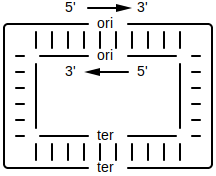
The replication process begins by a replication fork opening at the ori. As replication happens, that fork widens until the point it reaches ter...
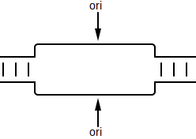
For each forked single-stranded DNA, DNA polymerases attach on and synthesize a new reverse complement strand so that it turns back into double-stranded DNA....
The process of synthesizing a reverse complement strand is different based on the section of DNA that DNA polymerase is operating on. For each single-stranded DNA, if the direction of that DNA strand is traveling from ...
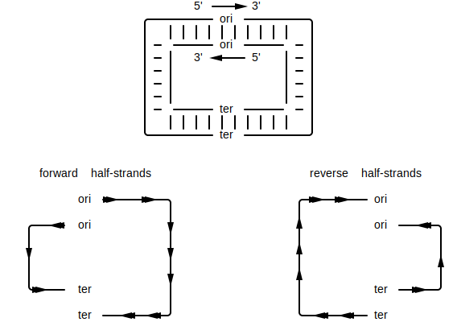
Since DNA polymerase can only walk over DNA in the reverse direction (3' to 5'), the 2 reverse half-strands will quickly get walked over in one shot. A primer gets attached to the ori, then a DNA polymerase attaches to that primer to begin synthesis of a new strand. Synthesis continues until the ter is reached...
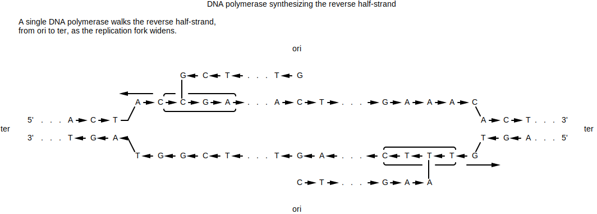
For the forward half-strands, the process is much slower. Since DNA polymerase can only walk DNA in the reverse direction, the forward half-strands get replicated in small segments. That is, as the replication fork continues to grow, every ~2000 nucleotides a new primer attaches to the end of the fork on the forward strands. A new DNA polymerase attaches to each primer and walks in the reverse direction (towards the ori) to synthesize a small segment of DNA. That small segment of DNA is called an Okazaki fragment...
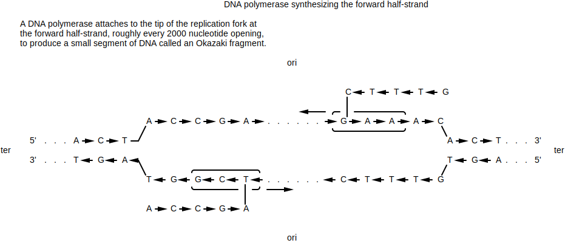
The replication fork will keep widening until the original 2 strands split off. DNA polymerase will have made sure that for each separated strand, a newly synthesized reverse complement is paired to it. The end result is 2 daughter chromosome where each chromosome has gaps...
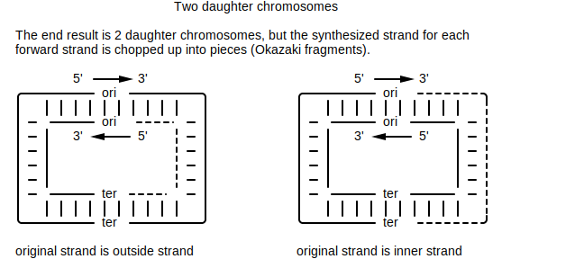
The Okazaki fragments synthesized on the forward strands end up getting sewn together by DNA ligase...
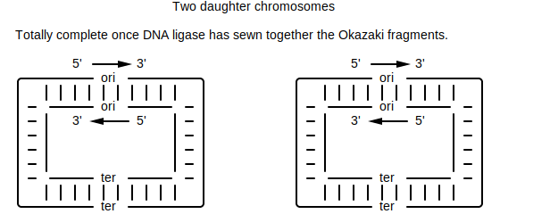
You now have two complete copies of the DNA.
↩PREREQUISITES↩
Since the forward half-strand gets its reverse complement synthesized at a much slower rate than the reverse half-strand, it stays single stranded for a much longer time. Single-stranded DNA is 100 times more susceptible to mutations than double-stranded DNA. Specifically, in single-stranded DNA, C has a greater tendency to mutate to T. This process of mutation is referred to as deanimation.
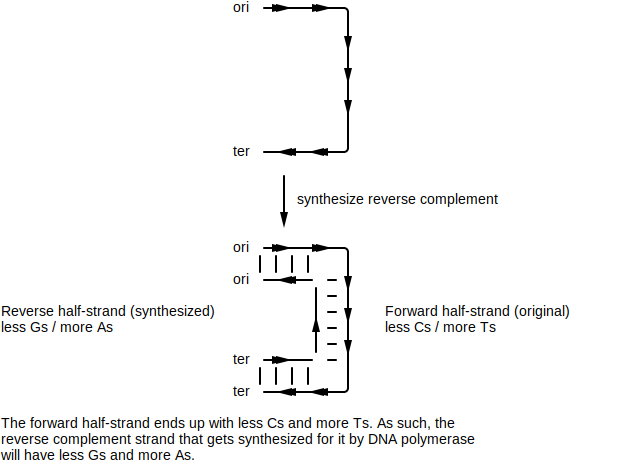
The reverse half-strand spends much less time as a single-stranded DNA. As such, it experiences much less C to T mutations.
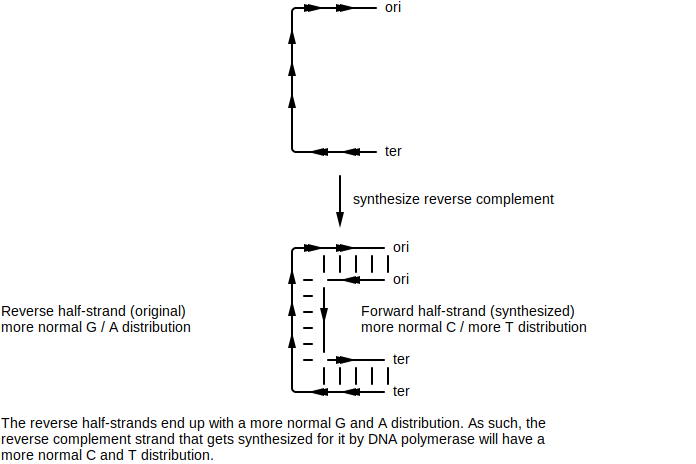
Ultimately, that means that a single strand will have a different nucleotide distribution between its forward half-strand vs its backward half-strand. If the half-strand being targeted for replication is the ...
To simplify, the ...
You can use a GC skew diagram to help pinpoint where the ori and ter might be. The plot will typically form a peak where the ter is (more G vs C) and form a valley where the ori is (less G vs C). For example, the GC skew diagram for E. coli bacteria shows a distinct peak and distinct valley.
Calculating skew for: ...
Result: [0, 0, 1, 0,...
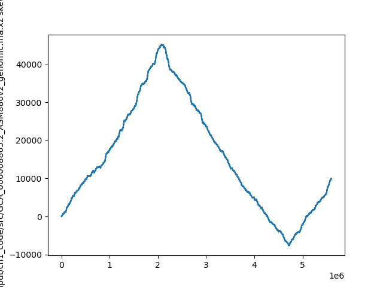
Min position (ori): 4719166
Max position (ter): 2073768
⚠️NOTE️️️⚠️
The material talks about how not all bacteria have a single peak and single valley. Some may have multiple. The reasoning for this still hasn't been discovered. It was speculated at one point that some bacteria may have multiple ori / ter regions.
Within the ori region, there exists several copies of some k-mer pattern. These copies are referred to as DnaA boxes.
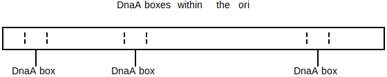
The DnaA protein binds to a DnaA box to activate the process of DNA replication. Through experiments, biologists have determined that DnaA boxes are typical 9-mers.
⚠️NOTE️️️⚠️
The reason why multiple copies of the same k-mer exist (DnaA box) probably has to do with DNA mutation. If one of the copies mutates to a point where the DnaA protein no longer binds to it, it can still bind to the other copies.
For some bacterial organism, given that we've found the general vicinity of the ori for that organism, we can search that vicinity for repeating 9-mers instances. The 9-mers may not match exactly -- the DnaA protein may bind to ...
The repeating k-mers found are potential DnaA box candidates.
For example, we know where the general vicinity of the ori is in E. coli given its GC skew. We can search the vicinity of the ori for repeating k-mers.
Calculating skew for: ...
Result: [0, 0, 1, 0,...
Ori vicinity (min pos): 4719166
In the ori vicinity, found clusters of k=9 (at least 3 occurrences in window of 500) in ... at...
A transcription factor / regulatory protein is an enzyme that influences the rate of gene expression for some set of genes. It does so by searching for and binding to a fuzzy nucleotide sequence called a regulatory motif. Regulatory motifs are typically 8 to 12 nucleotides in length, where each position may have one or more alternates. The simplest way to think of a regulatory motif is a regex pattern without quantifiers. For example, the regex [AT]TT[GC]CCCTA may match to ATTGCCCTA, ATTCCCCTA, TTTGCCCTA, and TTTCCCCTA. The regex itself is the motif, while the sequences being matched are motif members.
The physical location in DNA that a transcription factor binds to is called a transcription factor binding site. The binding site is located in a gene's upstream region (~250 to 2000 nucleotides before the start of the gene) and the sequence at that location is a motif member of that transcription factor's regulatory motif. When the transcription factor binds, that gene's rate of gene expression changes: either more transcription happens or less transcription happens.
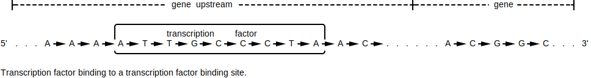
The production of transcription factors may be tied to certain internal or external conditions. For example, imagine a flower where the petals...
The external conditions of sunlight and temperature causes the saturation of some transcription factors to change. Those transcription factors influence the rate of gene expression for the genes that control the bunching or spreading of the petals.
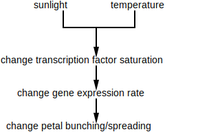
When a biologist suspects that a transcription factor may be responsible for a phenotype change, that biologist uses DNA microarrays or RNA-Seq to take snapshots of an organism's mRNA:
Comparing these snapshots identifies which genes have noticeably differing rates of gene expression. These identified genes are isolated and sequenced for further analysis. Specifically, if these genes (or a subset of these genes) were influenced by the same transcription factor, their upstream regions would contain motif members of that transcription factor's regulatory motif. But there often isn't a specific transcription factor being targeted, so biologists run algorithms on these isolated sequences to identify k-mer patterns that are similar to each other: these patterns, if they exist, could be members of the a transcription factor's regulatory motif. Further experiments need to be performed to validate or discredit.
A k-mer is a subsequence of length k within some larger biological sequence (e.g. DNA or amino acid chain). For example, in the DNA sequence GAAATC, the following k-mer's exist:
| k | k-mers |
|---|---|
| 1 | G A A A T C |
| 2 | GA AA AA AT TC |
| 3 | GAA AAA AAT ATC |
| 4 | GAAA AAAT AATC |
| 5 | GAAAT AAATC |
| 6 | GAAATC |
5' (5 prime) / 3' (3 prime) - 5' (5 prime) and 3' (3 prime) describe the opposite ends of DNA. The chemical structure at each end is what defines if it's 5' or 3' -- each end is guaranteed to be different from the other. The forward direction on DNA is defined as 5' to 3', while the backwards direction is 3' to 5'.
Two complementing DNA strands will always be attached in opposite directions.
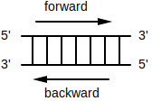
DNA polymerase - An enzyme that replicates a strand of DNA. That is, DNA polymerase walks over a single strand of DNA bases (not the strand of base pairs) and generates a strand of complements. Before DNA polymerase can attach itself and start replicating DNA, it requires a primer.
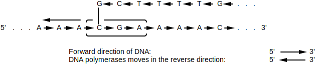
DNA polymerase is unidirectional, meaning that it can only walk a DNA strand in one direction: reverse (3' to 5')
primer - A primer is a short strand of RNA that binds to some larger strand of DNA (single bases, not a strand of base pairs) and allows DNA synthesis to happen. That is, the primer acts as the entry point for special enzymes DNA polymerases. DNA polymerases bind to the primer to get access to the strand.
replication fork - The process of DNA replication requires that DNA's 2 complementing strands be unwound and split open. The area where the DNA starts to split is called the replication fork. In bacteria, the replication fork starts at the replication origin and keeps expanding until it reaches the replication terminus. Special enzymes called DNA polymerases walk over each unwound strand and create complementing strands.
replication origin (ori) - The point in DNA at which replication starts.
replication terminus (ter) - The point in DNA at which replication ends.
forward half-strand / reverse half-strand - Bacteria are known to have a single chromosome of circular / looping DNA. In this DNA, the replication origin (ori) is the region of DNA where replication starts, while the replication terminus (ter) is where replication ends.
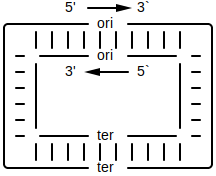
If you split up the DNA based on ori and ter being cutting points, you end up with 4 distinct strands. Given that the direction of a strand is 5' to 3', if the direction of the strand starts at...
ori and ends at ter, it's called the forward half-strand.
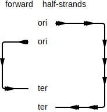
ter and ends at ori, it's called the reverse half-strand.
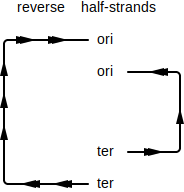
⚠️NOTE️️️⚠️
leading half-strand / lagging half-strand - Given the 2 strands tha make up a DNA molecule, the strand that goes in the...
This nomenclature has to do with DNA polymerase. Since DNA polymerase can only walk in the reverse direction (3' to 5'), it synthesizes the leading half-strand in one shot. For the lagging half-strand (5' to 3'), multiple DNA polymerases have to used to synthesize DNA, each binding to the lagging strand and walking backwards a small amount to generate a small fragment of DNA (Okazaki fragment). the process is much slower for the lagging half-strand, that's why it's called lagging.
⚠️NOTE️️️⚠️
Okazaki fragment - A small fragment of DNA generated by DNA polymerase for forward half-strands. DNA synthesis for the forward half-strands can only happen in small pieces. As the fork open ups every ~2000 nucleotides, DNA polymerase attaches to the end of the fork on the forward half-strand and walks in reverse to generate that small segment (DNA polymerase can only walk in the reverse direction).
DNA ligase - An enzyme that sews together short segments of DNA called Okazaki fragments by binding the phosphate group on the end of one strand with the deoxyribose group on the other strand.
single stranded DNA - A single strand of DNA, not bound to a strand of its reverse complements.
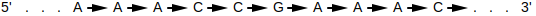
double stranded DNA - Two strands of DNA bound together, where each strand is the reverse complement of the other.
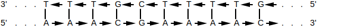
gene - A segment of DNA that contains the instructions for either a protein or functional RNA.
gene product - The final synthesized material resulting from the instructions that make up a gene. That synthesized material either being a protein or functional RNA.
transcription - The process of transcribing a gene to RNA. Specifically, the enzyme RNA polymerase copies the segment of DNA that makes up that gene to a strand of RNA.
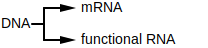
translation - The process of translating mRNA to protein. Specifically, a ribosome takes in the mRNA generated by transcription and outputs the protein that it codes for.
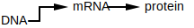
gene expression - The process by which a gene is synthesized into a gene product. When the gene product is...
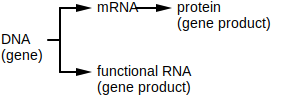
regulatory gene / regulatory protein - The proteins encoded by these genes effect gene expression for certain other genes. That is, a regulatory protein can cause certain other genes to be expressed more (promote gene expression) or less (repress gene expression).
Regulatory genes are often controlled by external factors (e.g. sunlight, nutrients, temperature, etc..)
feedback loop / negative feedback loop / positive feedback loop - A feedback loop is a system where the output (or some part of the output) is fed back into the system to either promote or repress further outputs.
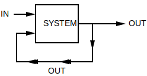
A positive feedback loop amplifies the output while a negative feedback loop regulates the output. Negative feedback loops in particular are important in biology because they allow organisms to maintain homeostasis / equilibrium (keep a consistent internal state). For example, the system that regulates core temperatures in a human is a negative feedback loop. If a human's core temperature gets too...
In the example above, the output is the core temperature. The body monitors its core temperature and employs mechanisms to bring it back to normal if it goes out of range (e.g. sweat, shiver). The outside temperature is influencing the body's core temperature as well as the internal shivering / sweating mechanisms the body employs.
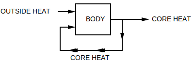
circadian clock / circadian oscillator - A biological clock that synchronizes roughly around the earth's day-night cycle. This internal clock helps many species regulate their physical and behavioural attributes. For example, hunt during the night vs sleep during the day (e.g. nocturnal owls).
upstream region - The area just before some interval of DNA. Since the direction of DNA is 5' to 3', this area is towards the 5' end (upper end).
downstream region - The area just after some interval of DNA. Since the direction of DNA is 5' to 3', this area is towards the 3' end (lower end).
transcription factor - A regulatory protein that controls the rate of transcription for some gene that it has influence over (the copying of DNA to mRNA). The protein binds to a specific sequence in the gene's upstream region.
motif - A pattern that matches against many different k-mers, where those matched k-mers have some shared biological significance. The pattern matches a fixed k where each position may have alternate forms. The simplest way to think of a motif is a regex pattern without quantifiers. For example, the regex [AT]TT[GC]C may match to ATTGC, ATTCC, TTTGC, and TTTCC.
motif member - A specific nucleotide sequence that matches a motif. For example, given that a motif represented by the regex [AT]TT[GC]C, the sequences ATTGC, ATTCC, TTTGC, and TTTCC would be its members.
motif matrix - A set of k-mers stacked on top of each other in a matrix, where the k-mers are either...
For example, the motif [AT]TT[GC]C has the following matrix:
| 0 | 1 | 2 | 3 | 4 |
|---|---|---|---|---|
| A | T | T | G | C |
| A | T | T | C | C |
| T | T | T | G | C |
| T | T | T | C | C |
regulatory motif - The motif of a transcription factor, typically 8 to 12 nucleotides in length.
transcription factor binding site - The physical binding site for a transcription factor. A gene that's regulated by a transcription factor needs a sequence located in its upstream region that the transcription factor can bind to: a motif member of that transcription factor's regulatory motif.
⚠️NOTE️️️⚠️
A gene's upstream region is the 600 to 1000 nucleotides preceding the start of the gene.
cDNA - A single strand of DNA generated from mRNA. The enzyme reverse transcriptase scans over the mRNA and creates the complementing single DNA strand.
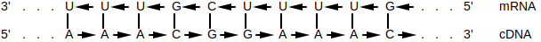
The mRNA portion breaks off, leaving the single-stranded DNA.
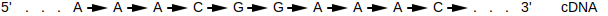
DNA microarray / DNA array - A device used to compare gene expression. This works by measuring 2 mRNA samples against each other: a control sample and an experimental sample. The samples could be from...
Both mRNA samples are converted to cDNA and are given fluorescent dyes. The control sample gets dyed green while the experimental sample gets dyed red.
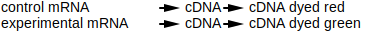
A sheet is broken up into multiple regions, where each region has the cDNA for one specific gene from the control sample printed.
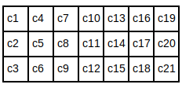
The idea is that once the experimental cDNA is introduced to that region, it should bind to the control cDNA that's been printed to form double-stranded DNA. The color emitted in a region should correspond to the amount of gene expression for the gene that region represents. For example, if a region on the sheet is fully yellow, it means that the gene expression for that gene is roughly equal (red mixed with green is yellow).
greedy algorithm - An algorithm that tries to speed things up by taking the locally optimal choice at each step. That is, the algorithm doesn't look more than 1 step ahead.
For example, imagine a chess playing AI that had a strategy of trying to eliminate the other player's most valuable piece at each turn. It would be considered greedy because it only looks 1 move ahead before taking action. Normal chess AIs / players look many moves ahead before taking action. As such, the greedy AI may be fast but it would very likely lose most matches.
Cromwell's rule - When a probability is based off past events, 0.0 and 1.0 shouldn't be used. That is, if you've...
Unless you're dealing with hard logical statements where prior occurrences don't come in to play (e.g. 1+1=2), you should include a small chance that some extremely unlikely event may happen. The example tossed around is "the probability that the sun will not rise tomorrow." Prior recorded observations show that that sun has always risen, but that doesn't mean that there's a 1.0 probability of the sun rising tomorrow (e.g. some extremely unlikely cataclysmic event may prevent the sun from rising).
Laplace's rule of succession - If some independent true/false event occurs n times, and s of those n times were successes, it's natural for people to assume the probability of success is . However, if the number of successes is 0, the probability would be 0.0. Cromwell's rule states that when a probability is based off past events, 0.0 and 1.0 shouldn't be used. As such, a more appropriate / meaningful measure of probability is .
For example, imagine you're sitting on a park bench having lunch. Of the 8 birds you've seen since starting your lunch, all have been pigeons. If you were to calculate the probability that the next bird you'll see a crow, would be flawed because it states that there's no chance that the next bird will be a crow (there obviously is a chance, but it may be a small chance). Instead, applying Laplace's rule allows for the small probability that a crow may be seen next: .
Laplace's rule of succession is more meaningful when the number of trials (n) is small.
pseudocount - When a zero is replaced with a small number to prevent unfair scoring. See Laplace's rule of succession.
randomized algorithm - An algorithm that uses a source of randomness as part of its logic. Randomized algorithms come in two forms: Las Vegas algorithms and Monte Carlo algorithms
Las Vegas algorithm - A randomized algorithm that delivers a guaranteed exact solution. That is, even though the algorithm makes random decisions it is guaranteed to converge on the exact solution to the problem its trying to solve (not an approximate solution).
An example of a Las Vegas algorithm is randomized quicksort (randomness is applied when choosing the pivot).
Monte Carlo algorithm - A randomized algorithm that delivers an approximate solution. Because these algorithms are quick, they're typically run many times. The approximation considered the best out of all runs is the one that gets chosen as the solution.
An example of a Monte Carlo algorithm is a genetic algorithm to optimize the weights of a deep neural network. That is, a step of the optimization requires running n different neural networks to see which gives the best result, then replacing those n networks with n copies of the best performing network where each copy has randomly tweaked weights. At some point the algorithm will stop producing incrementally better results.
Perform the optimization (the entire thing, not just a single step) thousands of times and pick the best network.
consensus string - The k-mer generated by selecting the most abundant column at each index of a motif matrix.
| 0 | 1 | 2 | 3 | 4 | |
|---|---|---|---|---|---|
| k-mer 1 | A | T | T | G | C |
| k-mer 2 | A | T | T | C | C |
| k-mer 3 | T | T | T | G | C |
| k-mer 4 | T | T | T | C | C |
| k-mer 5 | A | T | T | C | G |
| consensus | A | T | T | C | C |
entropy - A level of uncertainty inherent in some random variable. Given some set of outcomes for a variable, it's calculated as .
sequence - The ordered elements that make up some biological entity. For example, a DNA sequence contains the set of nucleotides and their positions for that DNA strand.
sequencing - The process of determining which nucleotides are assigned to which positions in a strand of DNA.
The machinery used for DNA sequencing takes multiple copies of the same DNA, breaks that DNA up into smaller fragments, and sequences those fragments (reads). Because these fragments vary in terms of size and starting index, the original larger DNA sequence that they came from can be constructed by finding fragment sequences with overlapping regions and stitching them together.
| 0 | 1 | 2 | 3 | 4 | 5 | 6 | 7 | 8 | 9 | |
|---|---|---|---|---|---|---|---|---|---|---|
| fragment 1 | C | T | T | C | T | T | ||||
| fragment 2 | G | C | T | T | C | T | ||||
| fragment 3 | T | G | C | T | T | C | ||||
| fragment 4 | T | T | G | C | T | T | ||||
| fragment 5 | A | T | T | G | C | T | ||||
| reconstructed | A | T | T | G | C | T | T | C | T | T |
sequencer - A machine that performs DNA sequencing.
read - A sequenced fragment produced in the process of sequencing some larger strand of DNA.